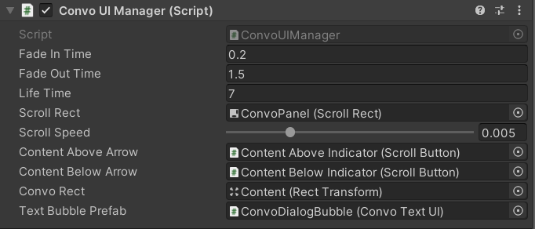
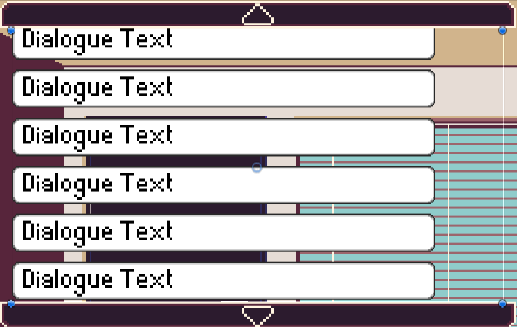

The Conversation UI Manager
The ConvoUI Manager is in charge of loading Conversations and displaying them to the player.
The ConvoUI Manager follows a singleton pattern, meaning that only one instance should exist at any point in the game.

Fade In Time- the time it takes for a speech bubble to fade into view.Fade Out Time- the time it takes for a speech bubble to fade out of view.Life Time- the total time a speech bubble exists, including the time to fade in and out.Scroll Rect- the scroll rect which acts as a scrollable window for all the text bubblesScroll Speed- the speed which the up and down button scrolls the scroll rectContent Above Arrow- the button that indicates there are text bubbles above and the window can be scrolled upContent Above Arrow- the button that indicates there are text bubbles below and the window can be scrolled downConvo Rect- the rect which holds all the text bubblesText Bubble Prefab- the prefab to generate additional text bubbles
